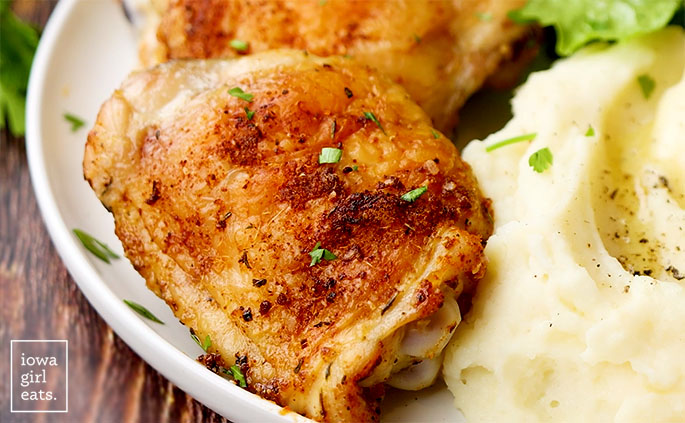

Oven Baked Chicken

Baked Chicken Thighs are incredibly easy and family friendly!
The number one thing you need to know about bone-in, skin-on Baked Chicken
Thighs is that my family SMASHES them anytime I serve them for dinner.
Plates are licked clean, complaints are non-existent, plus they require 5
minutes of prep time and bake hands-off in the oven, which I of course
love. This easy baked chicken recipe is the unicorn of chicken dinners!
Ingredients
Serves: 4-5
- 3-4lbs bone-in, skin-on chicken thighs (7-8 thighs)
- 1 tablespoon extra virgin olive oil
For the seasoning mix
- 1 teaspoon salt
- 1 teaspoon garlic powder
- 1 teaspoon onion powder
- 1/2 teaspoon black pepper
- 1/2 teaspoon paprika
- 1/2 teaspoon Italian Seasoning
Preparation
-
Preheat the oven to 400 degrees then get out a 9x13" baking pan and set
aside.
-
Remove the chicken thighs from their packaging then trim off excess skin
if necessary. Pat very dry with paper towels then place the thighs
inside the baking pan.
-
To a small bowl add the ingredients for the seasoning mix then stir to
combine. Drizzle the tops of the chicken thighs with the extra virgin
olive oil then sprinkle on the seasoning mix. Use your hands to rub the
oil and seasonings all over the fronts and backs of the thighs.
-
Bake for 30-40 minutes or until the thickest part of the chicken thighs
reach an internal temperature of 180-190 degrees. Note: chicken thighs
only need to reach an internal temperature of 165 degrees, but they're
much more tender when they're cooked to a higher internal temperature.
Briefly broil if desired to further crisp up the skin then let the
chicken thighs rest for 10 minutes before serving.